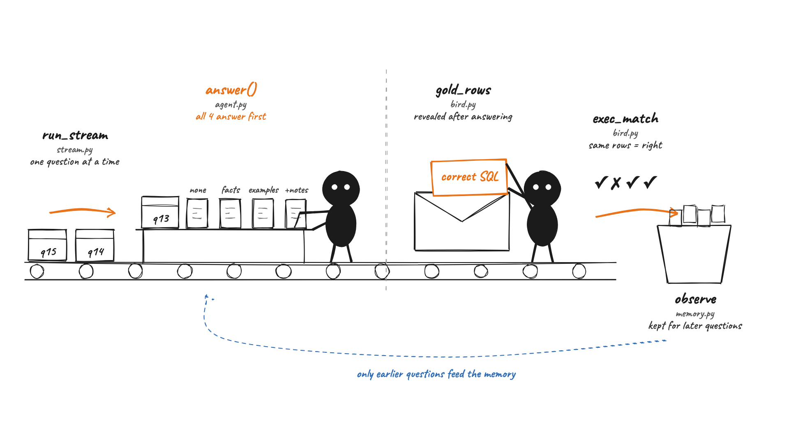
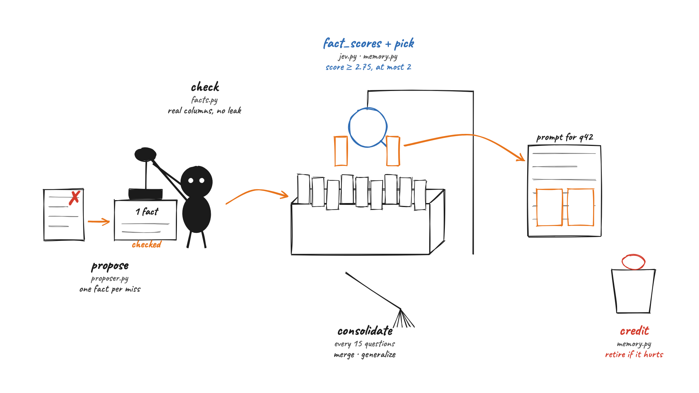
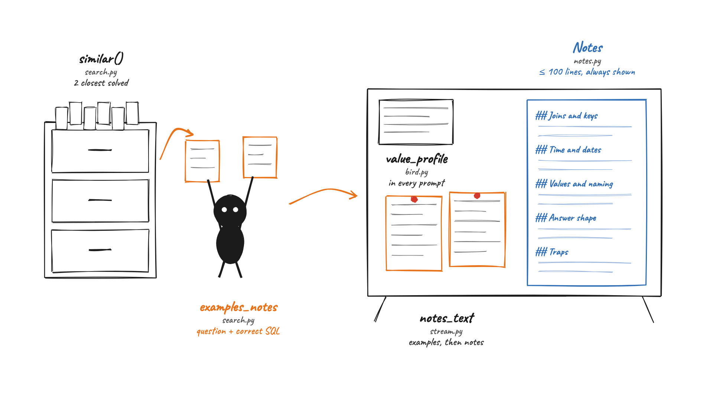
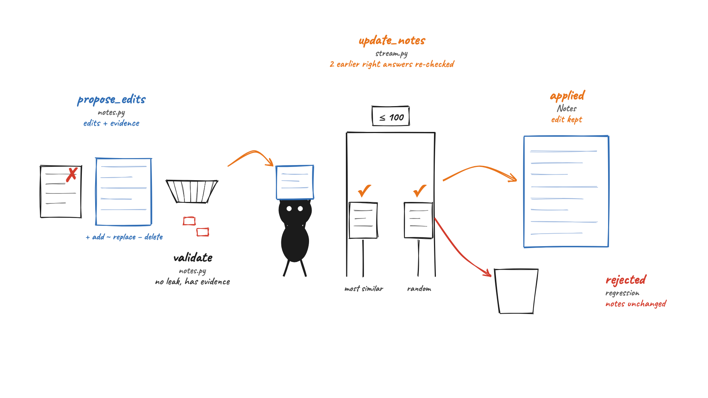
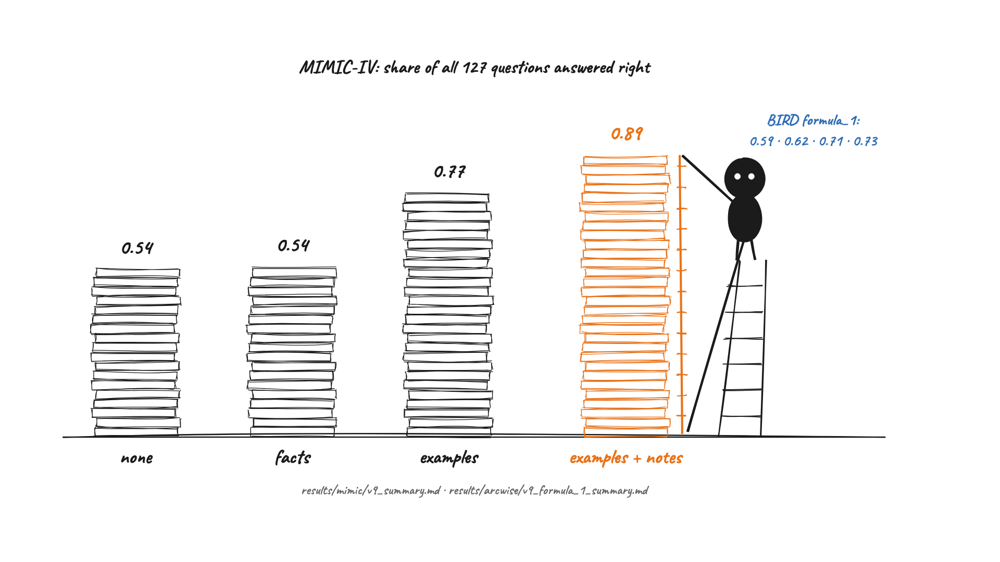

Five hand-drawn pictures, in learning order, of how EvoSQL works. Every label points at real code; the tables under each picture list the source. Start with picture 1. Evidence ledger: ledger.md.

Questions of one database arrive one at a time. Every memory type answers before anything about the question is revealed; only then is the correct SQL opened, each answer is marked right or wrong, and the question is kept as an earlier question. Memory can only ever come from questions that came before.
| Label | Source | What the code does |
|---|---|---|
| run_stream | stream.py: run_stream (176–238) | Loops over the questions in a fixed seeded order, one record per question |
| answer() | agent.py: answer (81); stream.py (186–194) | Tool loop (describe_table, profile_column, run_sql, submit); all four memory types answer before the reveal |
| gold_rows | bird.py: gold_rows (160) | Result rows of the correct SQL |
| exec_match | bird.py: exec_match (154) | Right when the answer's rows equal the correct rows |
| observe | memory.py: FactMemory.observe (35) | The revealed question joins the history used by later questions |

After the facts memory gets a question wrong, a model writes one short fact, which is checked against the data before it is filed. For each new question a judge model (JEV) scores every fact and lifts at most two into the prompt. Facts that break answers are retired, and the drawer is tidied every 15 questions.
| Label | Source | What the code does |
|---|---|---|
| propose | proposer.py: propose (61) | One fact (JSON) from the question, the wrong SQL and the correct SQL |
| check | facts.py: check, check_snippet (105, 120) | Real columns and values, not already in the docs, no leak of the answer |
| fact_scores + pick | jev.py: fact_scores (80); memory.py: pick (12) | Scores every fact 0–3; facts ≥ 2.75, at most 2, an unproven one only alone |
| credit | memory.py: credit (71) | +1 / −1 against no memory; harmful facts retired |
| consolidate | consolidate.py: consolidate (72); stream.py (231–232) | Every 15 questions: generalize, merge or drop facts, each edit checked |

The examples memory shows the 2 earlier questions most similar to the new one, each with its correct SQL. The examples + notes memory shows the same examples followed by a short notes file (five sections, at most 100 lines) that is always in the prompt. Every memory type's prompt also holds a profile of every column.
| Label | Source | What the code does |
|---|---|---|
| similar() | search.py: similar (41) | The k most similar earlier questions by local embeddings |
| examples_notes | search.py: examples_notes (50) | Renders each example as question + correct SQL |
| value_profile | bird.py: value_profile (119) | Common values, ranges and descriptions of every column, in every prompt |
| Notes | notes.py: Notes (36–67) | Five sections; rendered into the prompt; line count capped by config |
| notes_text | stream.py: notes_text (81–83) | The examples section, then the notes |

After the examples + notes memory gets a question wrong, a model proposes edits (add, replace, delete), each with evidence from the correct SQL. Invalid or leaking edits are dropped. The draft notes must keep two earlier right answers right (the most similar one and a random one) and stay within 100 lines; otherwise the notes stay unchanged.
| Label | Source | What the code does |
|---|---|---|
| propose_edits | notes.py: propose_edits (110) | Edits as JSON, each with an evidence field |
| validate | notes.py: validate (71) | Known op and section, real line, short text, evidence present, no leak |
| update_notes | stream.py: update_notes (128–173) | Re-answers the most similar and one random earlier correct question with the draft |
| ≤ 100 | stream.py: update_notes (144); configs/base.yaml: stream.notes | A batch that would exceed max_lines is rejected |
| applied / rejected | stream.py: update_notes (169–173) | Draft kept if both stay right, else the notes stay unchanged |

Share of all 127 MIMIC-IV questions answered right by each memory type. On BIRD formula_1, where questions rarely repeat, the same four score 0.59, 0.62, 0.71 and 0.73.
| Label | Source | Value |
|---|---|---|
| none · facts · examples · examples + notes | results/mimic/v9_summary.md | 0.535 · 0.543 · 0.772 · 0.890 |
| BIRD formula_1 | results/arcwise/v9_formula_1_summary.md | 0.591 · 0.621 · 0.712 · 0.727 |
Drawn as hand-built SVG (rough.js, Caveat font) and rendered with headless Chromium:
python3 docs/codebase-visual-atlas/src/render.py. Nothing in the pictures is inferred; one interpretation
("facts fail as a unit") is marked inferred in the ledger and kept out of the drawings.